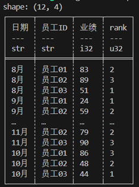

Polars Rust API tutorial
For Polars 0.43.1 作者：张德龙 zdlldine@gmail.com
本项目为学习Polars Rust API时所做的笔记。整理成book，供大家学习。
This project is a collection of notes taken while learning the Polars Rust API. It is organized into a book for your study.
Polars Rust API 教程
For Polars 0.43.1
作者：张德龙 zdlldine@gmail.com
2024-10-4
本项目为学习Polars Rust API时所做的笔记。整理成book，供大家学习。 为什么使用Polars Rust API？ 为了让你的Rust程序自身具备高性能的数据处理能力。而不需要给你的程序嵌入Python环境。
编译feature设置
#cargo.toml推荐依赖，Polars支持更多的特性，会导致编译速度减慢。
[dependencies]
polars = {version="0.43.0",features=["mode","find_many","polars-io","csv","polars-ops","lazy","docs-selection","streaming","regex","temporal","is_unique","is_between","dtype-date","dtype-datetime","dtype-time","dtype-duration","dtype-categorical","rows","is_in","pivot"]}
polars-io = "0.43.0"
polars-lazy = "0.43.0"
完整的编译特性列表：https://docs.rs/crate/polars/latest/features
| 常用特性 | 含义 |
|---|---|
| lazy | 启用lazy API |
| regex | 在col()表达式中支持正则 |
| sql | 支持SQL查询 |
| streaming | 启用数据流，这支持处理数据量大于内存。 |
| random | 生成随机采样的array。 |
| timezones | 时区支持 |
| strings | 字符串提取工具 |
| object | 支持任意数据类型ObjectChunked |
| json | 支持json的序列化和反序列化 |
| serde | 支持serde库序列化和反序列化 |
| serde-lazy | 支持serde库序列化和反序列化 |
| sort_multiple | 支持多列排序 |
| rows | 从行中创建 DataFrame 并从 DataFrame 中提取行。激活数据透视和转置操作。 |
| 这句话的意思是 | |
| asof_join | 支持ASOF连接1操作。 |
| cross_join | 创建两个DataFrame的笛卡尔积2 。 |
| is_in | 判断值是否在Series中 |
| is_between | 判断是否在上下限之间。 |
| zip_with | 将两个Series进行Zip运算。 |
| arg_where | 返回满足条件的索引 |
| unique_counts | 支持唯一值计数 |
| rank | 计算秩 |
| interpolate | 对Series的缺失值进行插值 |
在数据处理中，"连接"是指将两个或更多的数据集根据一些共享的键（key）或列合并在一起。通常，这种连接要求键的值必须完全匹配。然而，ASOF连接是一种特殊的连接方式，它不要求键的值完全匹配，而是允许根据最接近的键进行连接。这在处理时间序列数据时特别有用，因为你可能想要将数据连接到最接近的时间点，而不是精确匹配的时间点。例如，如果你有一份包含股票价格的数据，每行数据都有一个时间戳，你可能想要将这份数据与另一份包含经济指标的数据进行连接，这份数据也有时间戳，但时间戳可能并不完全匹配。
数据处理中，"笛卡尔积"是指两个数据集的所有可能的组合。例如，如果你有两个DataFrame，一个包含A、B两行，另一个包含1、2两行，那么这两个DataFrame的笛卡尔积将包含四行：(A, 1)，(A, 2)，(B, 1)，(B, 2)。
基本概念
Polars是由Rust写成的数据分析库。Polars主要依赖以下数据结构： Series, and ChunkedArray<T>, DataFrame和lazyframe。
DataFrame 是一个由 Series 组成的二维数据结构，可以理解为数据表，由行和列构成（列，在数据科学中称为”字段”）。可以在 DataFrame 上执行的操作与在 SQL 中进行的查询非常相似。你可以 GROUP ，JOIN，PIVOT1等。 Dataframe可以被视为 Vec<Series> 的抽象，每一列对应一个Series。Series仅仅持有Arc<dyn SeriesTrait>。而ChunkedArray<T>类型实现SeriesTrait。Series 是 Polars 的隐匿类型的列数据表示。一些与数据类型无关的操作由Series、SeriesTrait提供，比如索引、重命名操作。与数据类型有关的操作必须向下转型到 Series的底层数据结构——ChunkedArray<T>，参见<<索引单个元素Page.2>>。 ChunkedArray<T>，是分块后的数组，底层类似于Vec<dyn ArrowArray>，分块有利于数据的并行运算。这是Polars 的底层数据结构，并实现了许多操作。大多数操作是由在 chunked_array::ops 中定义或在 ChunkedArray 结构上实现的。
在数据处理中，"pivot"指的是数据透视。用于长格式的数据转换为宽格式的数据。
索引
用于查询Series或Dataframe或lazyframe的元素或子集。 polars中索引方式主要有4种：
| 类型 | API | 含义 |
|---|---|---|
| Series某个元素 | get方法 | 获取单个元素 |
| 整数索引值 | take方法 | 给定若干整数索引值，返回行或列的Series/Dataframe/lazyframe子集 |
| 名称索引 | select、column方法 | 给定列名，返回Dataframe/lazyframe子集。 |
| 切片索引 | slice方法 | 给定一个切片，返回切片范围内的子集； |
| bool索引 | filter方法 | 给定一个bool数组作为索引，必须和容器元素数量一致，返回true对应的元素子集。 |
API也根据以上4种设计。具体使用方式可查看 待补充
表达式
Polars 拥有一个强大的概念，称为表达式(Expr类型)。 Polars 表达式可以在各种上下文中使用，本质上是执行的是Fn(Series) -> Series。Expr将 Series 作为输入并将 Series 作为输出。因此Expr可以链式调用。
#![allow(unused)] fn main() { col("foo").sort().head(2) }
上述片段表示选择列 "foo" ，然后对此列进行排序，然后取排序输出的前两个值。表达式的强大之处在于每个表达式都会产生一个新的表达式，而且它们可以链式调用或保存入变量或作为参数传递。您可以通过polars 的执行上下文来运行表达式。在这里，我们在select上下文中运行两个表达式：
#![allow(unused)] fn main() { df.lazy() .select([ col("foo").sort(Default::default()).head(None), col("bar").filter(col("foo").eq(lit(1))).sum(), ]) .collect()?; }
每个独立的Polars表达式都可以在不需要任何其他表达式的结果或者不需要与其他表达式进行交互的情况下独立运行。因此，Polars可能会把表达式分配到不同的线程或者处理器上同时执行。 Polars表达式是高度并行的。理解Polars表达式是学习Polars的关键步骤。
上下文
能接受表达式的函数被称作上下文，包括以下三种：
| 含义 | 代码 |
|---|---|
| 选择 | df.select([..]) |
| 分组聚合 | df.groupby(..).agg([..]) |
| 横向堆叠(hstack) 或者增加列 | df.with_columns([..]) |
数据类型
Polars内部使用Arrow数据类型。Arrow数据类型是Apache Arrow项目中的一部分，它定义了一种跨平台的、语言无关的数据格式。这种数据格式可以在不同的系统和语言之间进行高效的数据交换，而无需进行数据序列化和反序列化。Arrow datatypes包括了许多常见的数据类型，如整数、浮点数、字符串、日期和时间等。还支持复杂数据结构String,Categorical, and Object。方法
组 | 类型 | 备注 |
|---|---|---|
| 数字类型 | Int8 | 8-bit signed integer. |
| 数字类型 | Int16 | 16-bit signed integer. |
| 数字类型 | Int32 | 32-bit signed integer. |
| 数字类型 | Int64 | 64-bit signed integer. |
| 数字类型 | UInt8 | 8-bit unsigned integer. |
| 数字类型 | UInt16 | 16-bit unsigned integer. |
| 数字类型 | UInt32 | 32-bit unsigned integer. |
| 数字类型 | UInt64 | 64-bit unsigned integer. |
| 数字类型 | Float32 | 32-bit floating point. |
| 数字类型 | Float64 | 64-bit floating point. |
| 嵌套类型 | Struct | 一个Struct类型类似于 Vec<Series>可以用于将多列数据封装在一列中. |
| 嵌类型 | List | List类型底层是Arrow LargeList类型. |
| 时间类型 | Date | 日期类型，底层用i32类型储存自1970年1月1日00:00:00 UTC1 开始的天数。日期范围大约是从公元前5877641年到公元5877641年。 |
| 时间类型 | Datetime(TimeUnit, Option<PlSmallStr>) | 日期时间类型。第一个参数为单位，第二个参数为时区。通常定义为Datetime(TimeUnit::Milliseconds,None)；底层用i64类型储存自1970年1月1日00:00:00 UTC 的毫秒。时间范围大约是从约公元前292,469,238年到公元后292,473,178年。在实际应用中，使用i64类型来存储毫秒级的时间戳是完全足够的。 |
| 时间类型 | Duration(TimeUnit) | 储存时间差. Duration(TimeUnit::Milliseconds) 是Date/Datetime减法运算的返回类型。 |
| 时间类型 | Time | 时间类型，内部储存了自一天0点开始的纳秒。 |
| 其他 | Boolean | 布尔值，内部用bit存储。 |
| 其他 | String | 字符串类型，底层是LargeUtf8 |
| 其他 | Binary | 任意二进制数据. |
| 其他 | Object | A limited supported data type that can be any value. |
| 其他 | Categorical | 分类变量。类似于R语言的因子化（factor）。crate feature dtype-categorical only |
详细Arrow类型说明，参见：https://arrow.apache.org/docs/format/Columnar.html
这一天（1970年1月1日00:00:00 UTC）被称作UNIX元年（UNIX epoch）
Float32和Float64遵守IEEE 754标准，但有以下需要注意：
Polars要求**操作不能依赖于0或 NaN的正负性，也不能保证NaN 值的有效载荷。**这不仅限于算术运算。排序和分组操作前会将所有零规范化为+0，将所有NaN规范化为没有有效载荷的正NaN，以进行有效的等式检查：NaN和NaN比较被认为相等。NaN比所有非NaN大。
在IEEE 754浮点数标准中，0和NaN（非数字）是有符号的，这意味着存在+0和-0，正NaN和负NaN。正零和负零在数值上是相等的，但是在某些计算中，如除法或者函数的极限，正零和负零可能会有不同的行为。在IEEE浮点数标准中，NaN（非数字）的二进制表示，有一个"有效载荷"（payload）部分。他指的是除符号位和指数位之外的部分。这个部分可以存储额外的信息。例如，如果一个数学运算的结果是未定义的，那么可以在NaN的有效载荷中存储这个信息。然而，大多数情况下，这个有效载荷并没有被使用，所以在许多操作中，对NaN的有效载荷的处理并没有明确的规定。
数据类型转换
Series底层类型转换
#![allow(unused)] fn main() { Series::cast(&self, dtype: &DataType) -> Result<Series, PolarsError> }
表达式执行类型转换
数值类型相互转换
不同容量的数值类型相互转换可能会遇到溢出问题。默认会抛出错误。
#![allow(unused)] fn main() { col("integers").cast(DataType::Boolean).alias("i2bool")//数值 to bool，0值为flase，非零为true col("floats").cast(DataType::Boolean).alias("f2bool")//数值 tobool，0值为flase，非零为true。允许bool和数值的互相转换。但不允许从字符串转型为bool。 }
字符串转换为值
#![allow(unused)] fn main() { col("floats_as_string").cast(DataType::Float64) //通过转型运算将字符串转换为数值，如果出现非数字，会抛出运行时错误。 }
值转换为字符串
#![allow(unused)] fn main() { col("integers").cast(DataType::String) col("float").cast(DataType::String) }
字符串解析为日期时间
#![allow(unused)] fn main() { let mut opt = StrptimeOptions::default(); opt.format=Some("%Y-%m-%d %H:%M:%S".to_owned());//默认值为None，polars默认可以识别标准日期时间形如："2024-09-20 00:44:00+08:00"，时区可省略。本行可以省略。 col("datetimestr").str().to_datetime(None,None,opt,lit("raise")) }
to_datatime参数分别为 单位 时区 解析参数 歧义处理。世界上很多地区使用夏令时，夏令时开启时，会将本地时间向未来拨动1小时，夏令时结束时再拨回来。向未来拨动1小时会导致某个时段不存在，拨回来时会让某个时段出现两次。当某个时间值出现在不应该存在的时段，就是歧义处理参数发挥作用的时候，设为lit("raise")，出现歧义时间时报错。 一个重要经验是日期时间的存储必须包含时区，比如 "2024-09-20 0:44:00**+08:00**"，有了时区信息才能正确表示时间。在省略时区的情况下，默认为UTC时间。这种正确不只是本地区，数据传到全球各地都能被正确运算和比较。
日期时间转换为字符串
#![allow(unused)] fn main() { col("datetime").dt().to_string("日期%Y-%m-%d，时间%H:%M:%S") }
Categorical分类变量
分类变量用于优化字符串处理。数据存储时，大量存在用字符串表示类别的情况，例如城市、性别、民族、物种等等。但加载进内存后，大量重复的字符串占用不必要的资源，并且字符串比较运算也非常耗时。分类变量用于解决以上问题：
| 字符串列 | 分类列 | - |
|---|---|---|
| Series | 类型ID | 类型对照 |
| 北极熊 | 0 | 北极熊 |
| 熊猫 | 1 | 熊猫 |
| 棕熊 | 2 | 棕熊 |
| 熊猫 | 1 | |
| 棕熊 | 2 | |
| 棕熊 | 2 | |
| 北极熊 | 0 | |
| … | … |
经过字符串列 -> Categorical的转换，我们仅仅需要存储类型ID和类型对照表。这大量的节省了内存，也加速了==运算。这种编码的好处是只存储一次字符串值。此外，当我们执行操作（例如排序，计数）时，我们可以对ID进行比较，这比处理字符串数据要快得多。Polars 支持使用两种不同的数据类型处理分类数据： Enum 和 Categorical 。当类别数量固定时使用Enum，出现不属于Enum的元素时会被认为出现数据错误。当类别的数量不是固定的，那么使用 Categorical，出现新的类型会默默的添加进Categorical。如果你的需求在过程中发生变化，你总是可以从一个转换为另一个。
分类变量的排序有两种类型，一种是依据类型ID数值顺序，一种是根据字符串顺序。这个区别是构建类型时指定：
#![allow(unused)] fn main() { DataType::Categorical(None, CategoricalOrdering::Physical) //对照表ID顺序 DataType::Categorical(None, CategoricalOrdering::Lexical) //词法顺序 }
示例：
#![allow(unused)] fn main() { //生成一个Categorical类型Series let s= Series::new("字段名", vec!["option1","option2","option3","option4"]) .cast(DataType::Categorical(None, CategoricalOrdering::Physical)); }
Null和None和NaN
在polars内部缺失数据用Null表示，这是因为polars遵守Apache Arrow 项目的数据规范。在rust中Option::None用于表示缺失数据。
#![allow(unused)] fn main() { let df = df! ( "value" => &[Some(1), None], )?; println!("{}", &df); }
The output:
shape: (2, 1)
┌───────┐
│ value │
│ --- │
│ i64 │
╞═══════╡
│ 1 │
│ null │
└───────┘
对于浮点数，也存在NaN（Not a Number），是特殊的一个数，他通常由错误的数学运算产生，NaN也是float类型的特殊值，它并不用来表示缺失。这意味着null_count()只计算null值，而不包括NaN值。fill_nan、fill_null分别用于填充nan和null值。
| 含义 | 表达式 | 返回值 |
|---|---|---|
| 零除以零 | 0/0 | NaN |
| 对负数开根号 | (-1f32).sqrt() | NaN |
| 无穷参与的部分运算 let inf=std::f32::INFINITY | inf*0 inf/inf | NaN |
| NaN参与的所有数学运算 | NaN+1 NaN*1 | NaN |
缺失数据的处理
| 处理方案 | 示例代码 |
|---|---|
| 填充常数 | col("col2").fill_null(lit(2)) |
| 填充表达式值 | col("col2").fill_null(median("col2")) |
| 填充前一个值 | col("col2").forward_fill(None) |
| 插值 | col("col2").interpolate(InterpolationMethod::Linear) |
本章系统介绍数据分析流程和相关概念，特别是IO和DataFrame、LazyFrame的操作。
示例数据
本书中可能会使用一些数据，集中罗列在此。
#![allow(unused)] fn main() { let mut employee_df: DataFrame = df!("姓名"=> ["老李", "老李", "老李", "老李", "老张", "老张", "老张", "老张", "老王", "老王", "老王", "老王"], "员工ID"=> ["员工01", "员工01", "员工01", "员工01", "员工02", "员工02", "员工02", "员工02", "员工03", "员工03", "员工03", "员工03"], "日期"=> ["8月", "9月", "10月", "11月", "8月", "9月", "10月", "11月", "8月", "9月", "10月", "11月"], "业绩"=> [83, 24, 86, 74, 89, 59, 48, 79, 51, 71, 44, 90])?; use polars::prelude::*; use chrono::prelude::*; use polars::prelude::prelude::date_range; let mut types_df = df!( "id" => &[9, 4, 2], "place" => &["Mars", "Earth", "Saturn"], "date" => date_range("date".into(), NaiveDate::from_ymd_opt(2022, 1, 1).unwrap().and_hms_opt(0, 0, 0).unwrap(), NaiveDate::from_ymd_opt(2022, 1, 3).unwrap().and_hms_opt(0, 0, 0).unwrap(), Duration::parse("1d"),ClosedWindow::Both, TimeUnit::Milliseconds, None)?, "sales" => &[33.4, 2142134.1, 44.7], "has_people" => &[false, true, false], "logged_at" => date_range("logged_at".into(), NaiveDate::from_ymd_opt(2022, 1, 1).unwrap().and_hms_opt(0, 0, 0).unwrap(), NaiveDate::from_ymd_opt(2022, 1, 1).unwrap().and_hms_opt(0, 0, 2).unwrap(), Duration::parse("1s"),ClosedWindow::Both, TimeUnit::Milliseconds, None)?, )? .with_row_index("index".into(), None)?; let salary_df = df![ "类别" => ["开发","开发","开发","开发","开发","实习","实习","销售","销售","销售"], "员工ID" => [11,7,9,8,10,5,2,3,1,4], "薪水" => [5200,4200,4500,6000,5200,3500,3900,4800,5000,4800], ]?; }
IO
本章介绍如何从常见格式 CSV、parquet、Json中读取和写入数据。
从CSV构建Dataframe
#![allow(unused)] fn main() { //需要polars-io特性，从csv文件创建，lazy dataframe use polars::prelude::*; //立即载入内存。如果csv内容很大，应该考虑使用lazy api let path="E:\\myfile\\src\\pol\\input收治病人数据.csv"; let df = CsvReadOptions::default() .try_into_reader_with_file_path(Some(path.into())) .unwrap() .finish() .unwrap(); }
从CSV创建lazyframe
用于lazy方式读取csv文件，普通读取文件的方式会立刻将数据载入内存。对于csv文件非常大来说会占用不必要的资源。Lazy API将事实读取推迟到lazyDataframe的collect()方法调用。在collect()函数调用之前，你可以设置处理方式和计算表达式。
#![allow(unused)] fn main() { //需要polars-io特性，从csv文件创建，lazyframe use polars::prelude::*; let lazyreader=LazyCsvReader::new("./test.csv"); let lazyreader=LazyCsvReader::new_paths(&["./test0.csv","./test1.csv"]); 读取多个文件。 let lf= lazyreader.finish()?; }
LazyCsvReader API
| API | 含义 |
|---|---|
| with_glob(toggle: bool) | 对路径开启glob通配符功能。 |
| with_skip_rows_after_header(self, offset: usize) | 在header后跳过offset数量的行 |
| with_row_index(self, row_index: Option<RowIndex>) | 读取后增加加行索引号，起始索引为0. RowIndex{name:"RowIndex",offset:0} |
| with_n_rows(num_rows: Option<usize>) | 只读取n行，在多线程条件下无法保证精确n。 |
| with_skip_rows( n: usize) | 跳过n行，header从行索引n开始。 |
| with_has_header(has_header: bool) | 是否存在标题行 |
| with_separator(separator: u8) | 默认字段分隔符 |
| with_comment_prefix(comment_prefix: Option<&str>) | 注释标记，以comment_prefix开始的行被当做注释忽略。 |
| with_quote_char(quote_char: Option<u8>) | 字符串引号标记，b'"' |
| with_eol_char(eol_char: u8) | 行结束符，b'\n' |
| with_null_values(null_values: Option<NullValues>) | 设置识别为空值的字符串 |
| with_encoding(CsvEncoding::Utf8) | 设置字符集 |
| finish() | 获得最终的lazyframe |
Schema
Schema在polars指的是数据表的结构，包含字段名和字段类型的详细信息。通常在csv载入时，polars能自动猜测数据类型。但偶尔会不满足需要，需要手动指明类型。例如解析日期时间。在.with_dtype_overwrite调用中不需要指明全部字段的信息，未指明的字段仍会自动猜测。可用的数据类型参见数据类型
#![allow(unused)] fn main() { // 本段代码演示如何指定csv部分字段的类型。 use polars::prelude::*; use std::fs::File; let mut schema = Schema::default(); schema.insert("col1".into(),DataType::String); schema.insert("col2".into(),DataType::Datetime( TimeUnit::Milliseconds, None)); // polars 能自动识别形如"2024-09-20 00:44:00+08:00"的标准时间格式，其中+08:00表示时区，如省略时区部分则默认为UTC时区 schema.insert("col3".into(), DataType::Categorical(None, CategoricalOrdering::Physical )); let lazyreader=LazyCsvReader::new("E:\\data.csv") .with_has_header(true) .with_dtype_overwrite(Some(schema.into()));//根据列名设置字段类型。 .finish()?; }
写入CSV文件
Dataframe to file
#![allow(unused)] fn main() { //写入csv文件 let mut file = File::create("docs/data/output.csv").expect("could not create file"); CsvWriter::new(&mut file).finish(&mut employee_df)?; }
lazyframe to file
#![allow(unused)] fn main() { let mut opt= CsvWriterOptions::default(); opt.maintain_order=true; //数据是并行处理的，如不开启此选项，文件中行顺序不能保证 opt.include_bom=true;//添加BOM 。如果不添加BOM，Excel打开会乱码;某些程序不支持UTF8 BOM，此时也会乱码。 df1.lazy().sink_csv("d:/out.csv", opt)?; }
BOM即Byte Order Mark字节序标记。BOM是为UTF-16和UTF-32准备的，用户标记字节序（byte order）。BOM即Byte Order Mark字节序标记。UTF-16、UTF-32是以2个字节和4个字节为单位进行处理的，就要考虑大端序、小端序问题。UTF-8编码是以1个字节为单位进行处理的，不会受CPU大小端的影响；UTF-8不需要BOM来表明字节顺序，不包含BOM的UTF-8才是标准格式。但微软选择用BOM来表明编码方式，因此没有BOM的UTF-8 CSV格式Excel会乱码，因为Excel默认编码为。含有BOM的UTF8格式也有兼容性问题，某些程序不识别BOM，就会导致UTF-8乱码。
从parquet格式构建Dataframe
Apache Parquet是一种开源的列式存储数据文件格式，旨在高效存储和检索数据。它提供了高效的数据压缩和编码方案，能够处理大量复杂数据。同时，支持多种编程语言。与简单的CSV格式相比，Parquet在存储和处理大数据集时具有明显优势：
- 存储效率：Parquet体积比CSV小得多。支持多种数据压缩。
- 查询性能：Parquet的导入和查询速度远高于CSV，特别是在处理大数据时。
- 自描述：Parquet 文件包含有关数据结构的元数据，包含字段和字段类型的详细信息。
- 兼容性和性能：Parquet受到许多数据处理框架（如 Hadoop 和 Spark）的兼容
#![allow(unused)] fn main() { //本代码演示如何加载Parquet格式文件 use std::fs::File; use polars::prelude::*; let mut input_file=File::open("d:/output.parquet")?; let df = ParquetReader::new(&mut input_file).finish()?; println!("{}",df); }
从parquet格式构建lazyframe
#![allow(unused)] fn main() { let mut opt = ScanArgsParquet::default(); opt.n_rows=None; //默认为None意为读取所有行，Some(100)只读取100行 opt.row_index=Some(RowIndex{name:"RowIndex".into(),offset:0});//将行索引添加到第一列，列名为RowIndex。默认为None表示不添加行索引。 let lf = LazyFrame::scan_parquet("d:/output.parquet", opt)?; println!("{}",lf.collect()?); }
写入parquet格式
Dataframe to file
#![allow(unused)] fn main() { use std::fs::File; use polars::prelude::*; let mut file = File::create("d:/output.parquet").expect("could not create file"); ParquetWriter::new(& mut file).with_compression(ParquetCompression::Zstd(None)).finish(& mut employee_df)?; }
lazyframe to file
#![allow(unused)] fn main() { let mut opt = ParquetWriteOptions { compression: ParquetCompression::Zstd(None),//启用压缩 maintain_order: true,//保持行顺序，默认多线程操作行序无法保证 ..Default::default() }; employee_df.lazy().sink_parquet("D:/output.parquet",opt)?; }
从Json创建Dataframe
Json支持两种格式的Json文件：
| 类型 | 含义 |
|---|---|
| JsonFormat::Json | 表示整个文件中包含一个数组，数组内容是一个一个的Json object。 |
| JsonFormat::JsonLines | 一行一个Json object。 |
Json
#![allow(unused)] fn main() { use polars::prelude::*; // one json array stored in entire file let json_array=r#" [ { "json_a": 1, "b": 2, "c": 3}, { "json_a": 21, "b": 22, "c": 23}, { "json_a": 31, "b": 32, "c": 33} ]"#; let buf=Cursor::new(json_array);//实现Read trait都可以作为输入 let df = JsonReader::new(buf) .with_json_format(JsonFormat::Json) .finish()?; }
JsonLines
#![allow(unused)] fn main() { //one json object per line; let json_lines=r#" {"jsonlines_a": 1,"b": 2,"c": 3} {"jsonlines_a": 21,"b": 22,"c": 23} {"jsonlines_a": 31,"b": 32,"c": 33}"#; let buf1=Cursor::new(json_lines);//实现Read trait都可以作为输入 let df1 = JsonReader::new(buf1) .with_json_format(JsonFormat::JsonLines) .finish()?; println!("{}\n{}",df,df1); }
从Json创建LazyFrame
用于lazy方式读取Jsonline文件，普通读取文件的方式会立刻将数据载入内存。对于Json文件非常大来说会占用不必要的资源。Lazy API将事实读取推迟到LazyFrame的collect()方法调用。在collect()函数调用之前，你可以设置处理方式和计算表达式。
#![allow(unused)] fn main() { //需要polars-io特性，从Json文件创建，lazyframe use polars::prelude::*; let lazyreader=LazyJsonLineReader::new("./test.csv"); let lazyreader=LazyJsonLineReader::new_paths(&["./test0.csv","./test1.csv"]); 读取多个文件。 let lf= lazyreader.finish()?; }
LazyJsonLineReader API
| API | 含义 |
|---|---|
| with_row_index(self, row_index: Option<RowIndex>) | 读取后增加加行索引号，起始索引为0. RowIndex{name:"RowIndex",offset:0} |
| with_n_rows(num_rows: Option<usize>) | 只读取n行，在多线程条件下无法保证精确n。 |
| with_schema_overwrite( self, schema_overwrite) | 设置部分字段的类型 |
| finish() | 获得最终的lazyframe |
写入Json
Dataframe to file
Json文件有两种格式JsonFormat::Json和JsonFormat::Json，详情见从Json创建Dataframe.md
#![allow(unused)] fn main() { //写入Json文件 let mut file = File::create("docs/data/output.json").expect("could not create file"); JsonWriter::new(&mut file) .with_json_format(JsonFormat::Json) //JsonFormat::Json 或 JsonFormat::JsonLines .finish(&mut employee_df)?; }
lazyframe to file
#![allow(unused)] fn main() { let mut opt= JsonWriterOptions::default(); opt.maintain_order=true; //数据是并行处理的，如不开启此选项，文件中行顺序不能保证 employee_df.lazy().sink_json("d:/out.json", opt)?; //默认为JsonLines格式，暂时无法设置为Json格式。 }
Series
Series是储存字段的数据结构。其中保存了字段内的所有元素，所有元素要求类型相同。Series的本质是ChunkedArray，即分块存储的数组。在Polars中，Series里的数据是以块（chunks）的形式存储的，每个块都是一个独立的数组。这种设计可以提高数据处理的效率，特别是在进行大规模数据操作时，分块后的数据可以并行运算。
构造Series
Series是储存字段的数据结构。其中保存了字段内的所有元素，所有元素要求类型相同。Series的本质是ChunkedArray，即分块存储的数组。在Polars中，Series里的数据是以块（chunks）的形式存储的，每个块都是一个独立的数组。这种设计可以提高数据处理的效率，特别是在进行大规模数据操作时，分块后的数据可以并行运算。
#![allow(unused)] fn main() { use polars::prelude::*; let s = Series::new("字段名", vec![0i32, 2, 1,3, 8]); }
索引Series
series.slice(idx,len)切片索引
返回的Series是self的视图，并不拷贝数据。 如果_offset为负数，那么从数组末尾开始计数。
函数声明：
fn slice(&self, _offset: i64, _length: usize) -> Series
示例：
#![allow(unused)] fn main() { let s = Series::new("字段名", [0i32, 1, 8]); let s2 = s.slice(2, 4); }
索引号索引
series.take_slice(&[u32])
当索引数组保存在切片里，使用take_slice
#![allow(unused)] fn main() { let s = Series::new("foo".into(), [1i32 ,2, 4,5,7,3]); let s2 = s.take_slice(&[1,3,5]) //s2 == Series[2,5,3] }
series.take(&IdxCa)
索引保存在IdxCA类型，使用take方法。IdxCa是ChunkedArray<UInt32Type>类型的别名。
#![allow(unused)] fn main() { let s = Series::new("foo".into(), [1i32 ,2, 4,5,7,3]); let idx0:IdxCa= IdxCa::from_vec("索引".into(), vec![1,3,4]); let res0 = s.take(&idx0).unwrap(); println!("{}", res0); }
逻辑索引
series.filter(bool_idxs)
bool_idx为逻辑索引，本质上是一系列bool值的数组。 bool_idx值为true的元素所对应的索引，将从series复制，并返回。这里潜在的要求是len(bool_idx)==len(series)。bool_dix是BooleanChunked类型，是ChunkedArray类型的别名， series定义了bool运算函数，支持Series和单个值比较，也支持Series之间比较。
#![allow(unused)] fn main() { let s1 = Series::new("字段名1", vec![0i32, 1,2,5,8]); let s2 = Series::new("字段名2", vec![2i32, -1,3,-5,8]); let idx = s1.gt(&s2).unwrap() & s1.lt_eq(5).unwrap(); let s2=s.filter(&idx).unwrap(); }
逻辑运算
series.filter(bool_idxs)中的bool_idxs是BooleanChunked类型，可由逻辑运算返回。
| Series比较方法 | 含义 |
|---|---|
| .gt(&Series) | > |
| .gt_eq(&Series) | >= |
| .equal() | == |
| .equal_missing() | == |
| .not_equal() | != |
| .not_equal_missing() | != |
| .lt() | < |
| .lt_eq() | <= |
| .is_nan() | 是否为NaN |
| .is_not_nan() | 不是NaN |
| .is_empty() | 是否为空, series.len()==0 |
| .is_finite() | 是否无穷 |
| .is_infinite() | 是否非无穷 |
| .none_to_nan(&self) | 将缺失值转换成NaN |
| .is_null() | 是否null，表示缺失值 |
| .Is_not_null() | 不是null |
*_missing系列函数用于比较两个Series或ChunkedArray是否相等，同时考虑到可能存在的缺失值（也就是None或NaN）。 在很多情况下，直接比较两个包含缺失值的Series或ChunkedArray可能会得到不准确的结果，因为None或NaN并不等于任何值，包括它们自身。equal_missing函数提供了一种方式来处理这种情况，它将两个相同位置都是缺失值的元素视为相等。
读取单个元素
Series必须先解析为指定类型的ChunkedArray才能进行索引：
#![allow(unused)] fn main() { let s = Series::new("字段名", [0i32, 1, 8]); let item =x.i32().unwrap().get(2).unwrap(); }
如果你需要在循环中处理Series中的元素，最好的做法是使用series.i32() 等系列函数，取出底层的Chunkedarray<T>引用，并不会复制一份数据。然后在这个ChunkedArray上进行操作。
可用的解析函数：i8() i16() i32() i64() f32() f64() u8() u16() u32() u64() bool() str() binary() decimal() list()，它们取出Series底层的Chunkedarray<T>引用。另外你需要自己保证调用的解析函数和底层的T类型一致，否则会出现运行时错误。转换底层类型T使用Series::cast(&DataType::Int64)函数，他会转换底层Chunkedarray<T>的T的类型，返回新的Series。
遍历值
Series本身是动态类型变量。如果编程时类型未知，则必须使用Series:iter()迭代器，它会返回AnyValue封装后的值，封装和解包会产生性能损失。尽量避免返回AnyValue的API。
底层类型未知
#![allow(unused)] fn main() { let s = Series::new("foo".into(), [1i32 ,2, 3]); let s_squared: Series = s.iter() .map(|opt_v| { match opt_v { AnyValue::Int32(x) => Some(x*x), //可以添加不同类型的处理逻辑。 _ => None, } }).collect(); }
底层类型已知
如果底层类型已经知晓，可以用i8() i16() i32() i64() f32() f64() u8() u16() u32() u64() bool() str() binary() decimal() list()这些向下转型函数，取出Series底层的Chunkedarray<T>引用。类型解析操作只是对底层的Chunkedarray<T>引用做了类型转换，并不会复制一份数据。另外你需要自己保证调用的解析函数和底层的T类型一致，否则会出现运行时错误。
s.i32()?.iter()生成对应的迭代器。
#![allow(unused)] fn main() { let s = Series::new("foo", [1i32 ,2, 3]); let s_squared: Series = s.i32()?.iter() .map(|opt_v| { match opt_v { Some(v) => Some(v * v), None => None, // null value } }).collect(); }
算数运算
Polars定义了 加减乘除等算数运算，用法如下。
#![allow(unused)] fn main() { let s = Series::new("a", [1 , 2, 3]); let out_add = &s + &s; let out_sub = &s - &s; let out_div = &s / &s; let out_mul = &s * &s; //支持Series 和 Series运算，也支持Series和数的运算 let s: Series = (1..3).collect(); let out_add_one = &s + 1; let out_multiply = &s * 10; let out_divide = 1.div(&s);//除法 let out_add = 1.add(&s); //加法 let out_subtract = 1.sub(&s); //减法 let out_multiply = 1.mul(&s);//乘法 }
Series常用API
| 方法 | 含义 |
|---|---|
| series.len() | 返回Series长度 |
| series.name() | 返回name |
| series.rename(&str) | 重命名name |
| series.rechunk() | Series本质上是分块后的数组，这有助于并行运算。但经过多次索引操作后，分块会非常碎片化，这影响计算效率。rechunk将相邻chunk合并，以提升运算效率。 |
| series.cast(&DataType::Int64) | 转换Series内部数据类型，返回新series |
| series.chunks() | 返回chunks |
| series.chunk_lengths | 返回chunks长度迭代器 |
| series.get(u32) | 用AnyValue类型返回指定索引的值。 |
Dataframe
Polars是一个高性能的数据处理库，专为快速分析大规模数据而设计。它的DataFrame是一个类似于Pandas的二维表格数据结构，但在性能和内存管理上进行了优化。 Polars DataFrame的特点：
- 列式存储：Polars采用列式存储，能更高效地进行数据读取和处理，特别适合大数据集。
- 并行处理：Polars利用多核CPU进行并行计算，显著提高数据处理速度。
- 强类型系统：Polars在编译时检查数据类型，减少运行时错误。
- 丰富的功能：提供了各种数据处理功能，包括过滤、聚合、连接和变换等。
Polars DataFrame为数据科学家和分析师提供了一种高效、灵活的数据处理工具，特别适合处理大规模数据集。
构造Dataframe
空白Dataframe
#![allow(unused)] fn main() { use polars::prelude::*; let df = DataFrame::default(); }
从宏创建Dataframe
#![allow(unused)] fn main() { use polars::prelude::*; let mut arr = [0f64; 5]; let v=vec![1,2,3,4,5]; //df宏支持 let df = df! ( "nrs" => &[Some(1), Some(2), Some(3), None, Some(5)], //直接字面值，用None表示null。 "names" => &["A", "A", "B", "C", "B"], //直接字面值 "col3" => &arr, //rust数组 "groups" => &v, // 由Vec 生成 )?; println!("{}", &df); }
从Vec<Series>构建Dataframe
#![allow(unused)] fn main() { use polars::prelude::*; let s1 = Series::new("Fruit".into(), ["Apple", "Apple", "Pear"]); let s2 = Series::new("Color".into(), ["Red", "Yellow", "Green"]); //s1 s2必须拥有同样的长度。 let df: PolarsResult<DataFrame> = DataFrame::new(vec![s1, s2]); }
索引Dataframe
列索引
#![allow(unused)] fn main() { let res: &Series =employee_df.column("员工")?; //根据单个列名返回Series引用 let res: &Series =employee_df.select_at_idx(1)?; //根据索引返回对应Series的引用 let res:Dataframe=employee_df.select(["类别", "薪水"])？//复制对应字段，返回新Dataframe。 let sv: Vec<&Series> = employee_df.columns(["类别", "薪水"])?;//根据多个列名返回对应Series的引用 let res: &[Series]=employee_df.get_columns()?;//返回所有列的切片，指向Dataframe内部数据结构并没有复制数据。 let res: Vec<Series>=employee_df.take_columns();//获得所有列的所有权 }
行索引
Bool索引
#![allow(unused)] fn main() { let se=employee_df.column("业绩")?; let mask = se.gt_eq(80)?; //判断se是否大于等于80。返回Bool数组。 let res:DataFrame = employee_df.filter(&mask)?; }
切片索引
#![allow(unused)] fn main() { let res:DataFrame = employee_df.slice(5,3); }
索引值
#![allow(unused)] fn main() { let idx = IdxCa::new("idx".into(), [0, 1, 9]); let res:DataFrame =employee_df.take(&idx)?;//返回索引为0 1 9 的行 }
分组和简单聚合
LazyFrame经过精心设计，更便于使用：建议调用dataframe.lazy()转换为LazyFrame后再进行聚合。
| 术语 | 含义 |
|---|---|
| 简单聚合 | 输入若干数据，根据某种算法返回一个值。例如：min，max，mean,head,tail等等都属于聚合函数。 |
| 分组 | 顾名思义，将数据根据指定字段进行分组，后续的聚合操作将对每个组调用一次聚合函数。 |
实战1
观察示例数据employee_df，其中保存了3位员工近4个月的业绩。
#![allow(unused)] fn main() { let mut employee_df: DataFrame = df!("姓名"=> ["老李", "老李", "老李", "老李", "老张", "老张", "老张", "老张", "老王", "老王", "老王", "老王"], "员工ID"=> ["员工01", "员工01", "员工01", "员工01", "员工02", "员工02", "员工02", "员工02", "员工03", "员工03", "员工03", "员工03"], "日期"=> ["8月", "9月", "10月", "11月", "8月", "9月", "10月", "11月", "8月", "9月", "10月", "11月"], "业绩"=> [83, 24, 86, 74, 89, 59, 48, 79, 51, 71, 44, 90])?; }
现在的需求是计算每个人所有月份业绩平均值，并且计算出每个人业绩大于70的次数。数据需要根据员工ID进行分组然后聚合。
#![allow(unused)] fn main() { let res = employee_df.lazy().group_by(["员工ID","姓名"]) //group_by执行后可能会打乱行序，group_by_stable可以保留原行序。 .agg([ col("业绩").mean().alias("平均业绩"), col("业绩").gt(70).cast(DataType::Int32).sum().alias("大于70次数") ]).collect()?; println!("{}",res); }
polars通过表达式提供的聚合函数能完成简单聚合。

实战2
计算每个月份获得业务第一名，第二名的人及其对应业绩。
#![allow(unused)] fn main() { let res = employee_df.lazy().group_by(["日期"]) //group_by执行后可能会打乱行序，group_by_stable可以保留原行序。 .agg([ col("员工ID"), col("业绩"), col("业绩").rank(RankOptions::default(),None).alias("rank"), ]) //step 1 .explode([col("员工ID"),col("业绩"),col("rank")]) //step2 .filter(col("rank").gt_eq(2)) //step3 .collect()? ; }
Step1
#![allow(unused)] fn main() { .group_by(["日期"]).agg([ col("员工ID"), col("业绩"), col("业绩").rank(RankOptions::default(),None).alias("rank"), ]) }
实战2中调用的agg聚合操作将组内的多个结果包裹进一个list。
shape: (4, 4)
┌──────┬────────────────────────────────┬──────────────┬───────────┐
│ 日期 │ 员工ID ┆ 业绩 ┆ rank │
│ --- ┆ --- ┆ --- ┆ --- │
│ str ┆ list[str] ┆ list[i32] ┆ list[u32] │
╞══════╪════════════════════════════════╪══════════════╪═══════════╡
│ 10月 ┆ ["员工01", "员工02", "员工03"] ┆ [86, 48, 44] ┆ [3, 2, 1] │
│ 8月 ┆ ["员工01", "员工02", "员工03"] ┆ [83, 89, 51] ┆ [2, 3, 1] │
│ 11月 ┆ ["员工01", "员工02", "员工03"] ┆ [74, 79, 90] ┆ [1, 2, 3] │
│ 9月 ┆ ["员工01", "员工02", "员工03"] ┆ [24, 59, 71] ┆ [1, 2, 3] │
└──────┴────────────────────────────────┴──────────────┴───────────┘
step2
.explode([col("员工ID"),col("业绩"),col("rank")])
该调用将被list包裹的值解包。
#![allow(unused)] fn main() { shape: (12, 4) ┌──────┬────────┬──────┬──────┐ │ 日期 ┆ 员工ID ┆ 业绩 ┆ rank │ │ --- ┆ --- ┆ --- ┆ --- │ │ str ┆ str ┆ i32 ┆ u32 │ ╞══════╪════════╪══════╪══════╡ │ 8月 ┆ 员工01 ┆ 83 ┆ 2 │ │ 8月 ┆ 员工02 ┆ 89 ┆ 3 │ │ 8月 ┆ 员工03 ┆ 51 ┆ 1 │ │ 10月 ┆ 员工01 ┆ 86 ┆ 3 │ │ 10月 ┆ 员工02 ┆ 48 ┆ 2 │ │ … ┆ … ┆ … ┆ … │ │ 11月 ┆ 员工02 ┆ 79 ┆ 2 │ │ 11月 ┆ 员工03 ┆ 90 ┆ 3 │ │ 9月 ┆ 员工01 ┆ 24 ┆ 1 │ │ 9月 ┆ 员工02 ┆ 59 ┆ 2 │ │ 9月 ┆ 员工03 ┆ 71 ┆ 3 │ └──────┴────────┴──────┴──────┘ }
复杂聚合和自定义函数
- 简单聚合：输入单个Series，输出只有一个元素的Series。
- 复杂聚合：输入多个Series，输出多行和多列。
复杂聚合需要自定义函数计算出我们想要的结果。
DataFrame复杂聚合
DataFrame.group_by(["date"])?.apply(F) 组合可完成复杂聚合。
F为自定义函数，要求F满足 |x: DataFrame| -> Result<DataFrame, PolarsError>
以分组后的数据封装进Dataframe，这样可以获得所有字段，返回Dataframe，每一组可以返回多行多列，但要求不同组返回的Dataframe的字段顺序、名称、类型一致。在返回的Dataframe中需要自己维护组别字段。
#![allow(unused)] fn main() { let mut employee_df: DataFrame = df!("Name"=> ["老李", "老李", "老李", "老李", "老张", "老张", "老张", "老张", "老王", "老王", "老王", "老王"], "employee_ID"=> ["员工01", "员工01", "员工01", "员工01", "员工02", "员工02", "员工02", "员工02", "员工03", "员工03", "员工03", "员工03"], "date"=> ["8月", "9月", "10月", "11月", "8月", "9月", "10月", "11月", "8月", "9月", "10月", "11月"], "score"=> [83, 24, 86, 74, 89, 59, 48, 79, 51, 71, 44, 90])?; let f = |x: DataFrame| -> Result<DataFrame, PolarsError> { let col1: &Series = x.column("Name")?; let col2: &Series = x.column("employee_ID")?; let col3: &Series = x.column("score")?; let group_id = x.column("date")?.str()?.get(0).unwrap(); // do something; We get those results below; let group_field = Series::new("group".into(), vec![group_id, group_id, group_id]); let res_field1 = Series::new("field1".into(), vec!["a1,1", "a2,1", "a3,1"]); let res_field2 = Series::new("field2".into(), vec!["a1,2", "a2,2", "a3,2"]); let res_field3 = Series::new("field3".into(), vec!["a1,3", "a2,3", "a3,3"]); let result = DataFrame::new(vec![group_field, res_field1, res_field2, res_field3])?; return Ok(result); }; let res = employee_df.group_by(["date"])?.apply(f)?; //一次聚合返回了3行3列 println!("{}", res); }
Join操作
什么是join联接
数据处理中经常出现以下需求：一张表保存了大量用户id和用户姓名、年龄、手机号、购物地址等等用户信息，另一张表保存了用户id和待快递商品，商品价格等等交易信息。如何能根据id将两张表的数据整合到一起。
联接操作用于解决以上问题。根据两张dataframe指定字段，将两张表组合到一起。join需要两个dataframe作为输入，分别称为左表和右表；另外必须指明哪些字段被用做匹配依据，称为"键"，除了键以外的所有字段被用作值，分别称为左表值字段、右表值字段。join运算的结果包含：键，左表值字段、右表值字段。 join会出现4种情况
- 某键在左表中出现，在右表未出现；此键对应的右表值字段视为null
- 某键在右表中出现，在左表未出现；此键对应的左表值字段视为null
- 某键在两张表中都出现; 键至少在其中一个表是unique的。
- 某键在两张表中都出现; 键在两张表都不是unique的。会导致多对多联接，结果意义不明，通常是数据错误导致，需仔细排查。
主要链接操作分5种：
- 左联接left_join:结果保留所有左表的键，及其对应的左表值字段、右表值字段。对于右表中未出现的键对应的值视为null。
- 右联接right_join: 结果保留所有右表的键，及其对应的左表值字段、右表值字段。对于左表中未出现的键对应的值视为null。
- 内联接inner_join:结果保留左表和右表共有的键，及其对应的左表值字段、右表值字段。
- 全联接full_join:结果保留左表和右表所有的键，及其对应的左表值字段、右表值字段，不存在的值被视为null。
- 笛卡尔联接cross_join:"笛卡尔积"是指两个数据集的所有可能的组合。例如，对于某键的左表值字段包含A、B两行，右表值字段包含1、2两行，那么这个键的笛卡尔联接将产生四行：(A, 1)，(A, 2)，(B, 1)，(B, 2)。
left_join和right_join本质相同仅仅是调换了左表，右表，因此polars仅仅实现了left_join。 dataframe和lazyframe有不同的语法。
joinAPI
#![allow(unused)] fn main() { left_df.left_join(right_df, left_on,right_on) left_df.inner_join(right_df, left_on,right_on) left_df.full_join(right_df, left_on,right_on) left_df.cross_join(right_df, left_on,right_on) //用法： left.full_join(right, ["join_column_left"], ["join_column_right"]) }
数据透视Pivots
数据透视Pivots 数据透视是将数据进行长格式转换为宽格式，并应用聚合函数。
#![allow(unused)] fn main() { //cargo.toml polars features中添加"pivot"。 use polars_lazy::frame::pivot::pivot; let out = pivot(&df1, ["日期"], Some(["姓名","员工ID"]), Some(["值"]), false, None, None)?; println!("{}\n{}",df1,out); }

Dataframe API
| API | 含义 |
|---|---|
| df.get_column_index(name: &str) -> Option<usize> | 根据name，返回Series对应的索引 |
| df.column(name: &str) -> Result<&Series, PolarsError> | 根据列名返回Series引用 |
| df.select_at_idx(idx: usize) -> Option<&Series> | 根据索引返回对应Series的引用 |
| df.select_by_range(range: R) -> Result<DataFrame, PolarsError> | 根据Range返回新的dataframe |
| df.columns(&self, names: I) -> Result<Vec<&Series>, PolarsError> | let sv: Vec<&Series> = df.columns(["类别", "薪水"])?; 返回Vec<&Series> |
| df.select(&self, selection: I) -> Result<DataFrame, PolarsError> | df.select(["类别", "薪水"])返回新的DataFrame |
| df.get_columns() -> &[Series] | 返回所有列的切片 |
| df.take_columns() -> Vec<Series> | 获得所有列的所有权 |
| df.get_column_names() -> Vec<&PlSmallStr> | 所有列名的引用 |
| df.get_column_names_owned(&self) -> Vec<PlSmallStr> | clone并返回所有列名，所有权。 |
| df.set_column_names (names: I) | 设置列名 |
| df.dtypes() -> Vec<DataType> | 返回每个字段的类型 |
| df.filter(mask: &ChunkedArray<BooleanType>) -> Result<DataFrame, PolarsError> | mask的每一个元素代表一行，筛选出mask==true的行。 |
| df.take(indices: &ChunkedArray<UInt32Type>) -> Result<DataFrame, PolarsError> | 返回指定索引的行。 let idx = IdxCa::new("idx".into(), [0, 1, 9]); df.take(&idx) |
| df.slice(offset: i64, length: usize) -> DataFrame | 返回切片指定的行。 |
| df.rename(oldname:&str,newname:PlSmallStr) -> Result<&mut DataFrame, PolarsError> | 重命名字段，df.rename("oldname", "newname".into()) |
| df.sort_in_place(by: impl IntoVec<PlSmallStr>,sort_options) -> Result<&mut DataFrame, PolarsError> | 就地排序df，df就保存了排序结果，df.sort(["col1","col2"], Default::default()) |
| df.sort (by: impl IntoVec<PlSmallStr>,sort_options) -> Result<DataFrame, PolarsError> | 排序df，返回排序后新的Dataframe，原变量不变。 |
| df.replace(column: &str,new_col: S) -> Result<&mut DataFrame, PolarsError> | 替换指定column为新的Series。传入的new_col的name会被赋值为指定的名称 |
| df.with_column(new_col: IntoSeries) | df中添加一列，如果new_col的name已经存在，那么覆盖旧值 |
| df.insert_column(index: usize,column: S) | 在指定索引处插入column |
| df.hstack_mut(columns: &[Series]) | df中添加多列，改变df |
| df.hstack(columns: &[Series]) | df中添加多列，返回新的dataframe |
| df.get(idx) -> Option<Vec<AnyValue<'_>>> | 返回指定行。效率低下 |
| df.with_row_index_mut (name: PlSmallStr, offset: Option | 在指定offset索引位置添加索引列，列名name。 |
| df.schema() -> Schema<DataType> | 获取Dataframe的结构，包含字段名和字段类型。 |
| df.fields() -> Vec<Field> | 返回字段信息 |
| df. estimated_size() | 获取堆内存占用，字节为单位。 |
| df.explode(columns: I) -> Result<DataFrame, PolarsError> | 将list Series解包。 |
执行代码前

执行
res.explode(["员工ID","业绩","rank"])?;后list的内容被扁平化。

行迭代
推荐的行迭代方式
通常在数据编程时明确知道字段类型，此时应使用i8() i16() i32() i64() f32() f64() u8() u16() u32() u64() bool() str() binary() decimal() list()这些向下转型函数，取出Series底层的Chunkedarray<T>引用。类型解析操作只是对底层的Chunkedarray<T>引用做了类型转换，并不会复制一份数据。另外你需要自己保证调用的解析函数和底层的T类型一致，否则会出现运行时错误。参见：遍历Series
分别取出每个字段的元素迭代器后应使用itertools::multizip将多个迭代器绑定成一个，然后进行迭代。
这里给出通过遍历Dataframe行，生成Person类型值的代码。
#![allow(unused)] fn main() { use polars::prelude::*; use itertools::multizip; #[derive(Debug)] pub struct Person { id: u32, name: String, age: u32, } let df = df!( "id" => &[1u32,2,3], "name" => &["John", "Jane", "Bobby"], "age" => &[32u32, 28, 45] ) .unwrap(); //take_columns()将获取df的所有权，这不是必须的，df.columns可返回指定字段的引用。 let objects = df.take_columns(); //对字段进行向下转型，并生成迭代器 let id_ = objects[0].u32()?.iter(); let name_ = objects[1].str()?.iter(); let age_=objects[2].u32()?.iter(); //利用multizip同时迭代多个迭代器 let combined = multizip((id_, name_, age_)); let res: Vec<_>= combined.map( |(a, b, c)|{ Person{ id:a.unwrap(), name:b.unwrap().to_owned(), age:c.unwrap(), } }).collect(); print!("{:?}",res); }
不推荐的行迭代方式，AnyValue
在Rust的Polars库中，Series是一个动态类型的数据结构，它可以包含任何类型的数据。当你使用df.get_row()方法获取一行时，数据会被逐个封装进AnyValue。Polars需要在运行时确定这个元素的实际类型。AnyValue是枚举，你需要用模式匹配将值取出。这个过程需要一些额外的计算，因此如果在循环中使用df.get_row()方法，这些额外的计算会累积起来，可能会显著降低代码的性能。
这里给出通过df.get_row遍历Dataframe行，生成Person类型值的代码。
#![allow(unused)] fn main() { use polars::prelude::*; #[derive(Debug)] pub struct Person { id: u32, name: String, age: u32, } let df = df!( "id" => &[1u32,2,3], "name" => &["John", "Jane", "Bobby"], "age" => &[32u32, 28, 45] ).unwrap(); let personlist_iter= (0..df.height()).into_iter().map( |x: usize|{ let mut row_ = df.get_row(x).unwrap(); let mut row_iter= row_.0.into_iter(); //通过模式匹配取出对应的值 if let (AnyValue::UInt32(id_), AnyValue::String(name_), AnyValue::UInt32(age_)) = (row_iter.next().unwrap(), row_iter.next().unwrap(), row_iter.next().unwrap()){ return Person{ id: id_, name: name_.to_string(), age: age_, }; }else { panic!("bad value in df!"); } } ); let person_list: Vec<Person>=personlist_iter.collect::<Vec<_>>(); println!("{:?}",person_list); }
Lazyframe操作
和Dataframe类似，Lazyframe代表一个即将成为Dataframe的抽象，Lazyframe中记录了数据来源，数据操作，数据的流向（生成Dataframe，或通过sink_csv写入磁盘）。lazyframe是并行的，而且是数据流，这对处理巨大数据集非常有用，巨大数据集可能无法完全载入内存，lazyframe能显著降低驻留内存。
构造Lazyframe
构造lazyframe可以通过IO章节介绍的API从文件中载入。也可以调用dataframe的lazy()方法可以生成对应的lazyframe。
#![allow(unused)] fn main() { let lf=df.lazy(); }
索引LazyFrame
LazyFrame的索引需要使用表达式语法。
列索引
在select上下文中，可以使用col()表达式选择某些列。 cols(["date", "logged_at"])，选中指定的names。col("*")或all() 表示选中所有列。exclude(["logged_at", "index"])表示排除指定列。*可用于通配符。
#![allow(unused)] fn main() { //单列选择 let out = types_df.clone().lazy().select([col("place")]).collect()?; //通配符选取，选中列名以a开始的所有列 let out = types_df.clone().lazy().select([col("a*")]).collect()?; //正则表达式 let out = types_df.clone().lazy().select([col("^.*(as|sa).*$")]).collect()?; //多个列名选取 let out = types_df.clone().lazy().select([cols(["date", "logged_at"])]).collect()?; //数据类型选取,选择满足数据类型的所有列。 let out = types_dfclone().lazy() .select([dtype_cols([DataType::Int64, DataType::UInt32, DataType::Boolean]).n_unique()]) .collect()?; // alias重命名字段 let df_alias = df.clone().lazy() .select([ (col("nrs") + lit(5)).alias("nrs + 5"), (col("nrs") - lit(5)).alias("nrs - 5")]) .collect()?; }
行索引
调用lazyframe的方法
#![allow(unused)] fn main() { let res : LazyFrame=types_df.clone().lazy().filter(col("id").gt_eq(lit(4))); // filter的参数为某个返回bool数组的表达式，值为false的行将被丢弃。 println!("{}",res.collect()?); let res:LazyFrame=types_df.clone().lazy().slice(1, 2);//返回包含切片指定的行,offset为负数表示从末尾开始计数。.slice(-5,3) 表示从倒数第5个元素开始连续选择3个元素。 }
在select上下文中，使用表达式进行行索引
#![allow(unused)] fn main() { let res:LazyFrame= employee_df.clone().lazy().select( col("*").filter( col("值").gt_eq(lit(4)) ) ); let res:LazyFrame= employee_df.clone().lazy().select(col("*").slice(2,3)); }
表达式
Polars 拥有一个强大的概念，称为表达式(Expr类型)。 Polars 表达式可以在各种上下文中使用，本质上是执行的是Fn(Series) -> Series。Expr将 Series 作为输入并将 Series 作为输出。因此Expr可以链式调用。
#![allow(unused)] fn main() { col("foo").sort().head(2) }
上述片段表示选择列 "foo" ，然后对此列进行排序，然后取排序输出的前两个值。表达式的强大之处在于每个表达式都会产生一个新的表达式，而且它们可以链式调用或保存入变量或作为参数传递。您可以通过polars 的执行上下文来运行表达式。在这里，我们在select上下文中运行两个表达式：
#![allow(unused)] fn main() { df.lazy() .select([ col("foo").sort(Default::default()).head(None), col("bar").filter(col("foo").eq(lit(1))).sum(), ]) .collect()?; }
每个独立的Polars表达式都可以在不需要任何其他表达式的结果或者不需要与其他表达式进行交互的情况下独立运行。因此，Polars可能会把表达式分配到不同的线程或者处理器上同时执行。 Polars表达式是高度并行的。理解Polars表达式是学习Polars的关键步骤。
上下文
能接受表达式的函数被称作上下文，包括以下三种：
| 含义 | 代码 |
|---|---|
| 选择 | df.select([..]) |
| 分组聚合 | df.groupby(..).agg([..]) |
| 横向堆叠(hstack) 或者增加列 | df.with_columns([..]) |
表达式
Polars 拥有一个强大的概念，称为表达式(Expr类型)。 Polars 表达式可以在各种上下文中使用，本质上是执行的是Fn(Series) -> Series。Expr将 Series 作为输入并将 Series 作为输出。因此Expr可以链式调用。
#![allow(unused)] fn main() { col("foo").sort().head(2) }
上述片段表示选择列 "foo" ，然后对此列进行排序，然后取排序输出的前两个值。表达式的强大之处在于每个表达式都会产生一个新的表达式，而且它们可以链式调用或保存入变量或作为参数传递。您可以通过polars 的执行上下文来运行表达式。在这里，我们在select上下文中运行两个表达式：
#![allow(unused)] fn main() { df.lazy() .select([ col("foo").sort(Default::default()).head(None), col("bar").filter(col("foo").eq(lit(1))).sum(), ]) .collect()?; }
每个独立的Polars表达式都可以在不需要任何其他表达式的结果或者不需要与其他表达式进行交互的情况下独立运行。因此，Polars可能会把表达式分配到不同的线程或者处理器上同时执行。 Polars表达式是高度并行的。理解Polars表达式是学习Polars的关键步骤。详见：LazyFrame-表达式和上下文
上下文
能接受表达式的函数被称作上下文，包括以下三种：
| 含义 | 代码 |
|---|---|
| 选择 | df.select([..]) |
| 分组聚合 | df.groupby(..).agg([..]) |
| 横向堆叠(hstack) 或者增加列 | df.with_columns([..]) |
基本运算
表达式支持基本运算 + - * / < >。
#![allow(unused)] fn main() { let df_numerical = df .clone() .lazy() .select([ (col("nrs") + lit(5)).alias("nrs + 5"), (col("nrs") - lit(5)).alias("nrs - 5"), (col("nrs") * col("random")).alias("nrs * random"), (col("nrs") / col("random")).alias("nrs / random"), ]) .collect()?; println!("{}", &df_numerical); }
逻辑比较、三角函数、聚合等等运算见表达式方法
列选择
在select上下文中，可以使用col()表达式选择某些列。 col("*")或all() 表示选中所有列。exclude(["logged_at", "index"])表示排除指定列。*可用于通配符。 cols(["date", "logged_at"])，选中指定的names。
#![allow(unused)] fn main() { //单列选择 let out = df.clone().lazy().select([col("place")]).collect()?; //通配符选取，选中列名以a开始的所有列 let out = df.clone().lazy().select([col("a*")]).collect()?; //正则表达式 let out = df.clone().lazy().select([col("^.*(as|sa).*$")]).collect()?; //多个列名选取 let out = df.clone().lazy().select([cols(["date", "logged_at"])]).collect()?; //数据类型选取,选择满足数据类型的所有列。 let out = df.clone().lazy() .select([dtype_cols([DataType::Int64, DataType::UInt32, DataType::Boolean]).n_unique()]) .collect()?; }
本节数据集生成
#![allow(unused)] fn main() { use chrono::prelude::*; use polars::time::*; let date_df = df!( "id" => &[9, 4, 2], "place" => &["Mars", "Earth", "Saturn"], "date" => date_range("date", NaiveDate::from_ymd_opt(2022, 1, 1).unwrap().and_hms_opt(0, 0, 0).unwrap(), NaiveDate::from_ymd_opt(2022, 1, 3).unwrap().and_hms_opt(0, 0, 0).unwrap(), Duration::parse("1d"),ClosedWindow::Both, TimeUnit::Milliseconds, None)?, "sales" => &[33.4, 2142134.1, 44.7], "has_people" => &[false, true, false], "logged_at" => date_range("logged_at", NaiveDate::from_ymd_opt(2022, 1, 1).unwrap().and_hms_opt(0, 0, 0).unwrap(), NaiveDate::from_ymd_opt(2022, 1, 1).unwrap().and_hms_opt(0, 0, 2).unwrap(), Duration::parse("1s"),ClosedWindow::Both, TimeUnit::Milliseconds, None)?, )? .with_row_index("index", None)?; println!("{}", &df); }

重命名alias
alias
alias用于更改单个字段名
#![allow(unused)] fn main() { let df_alias = df.clone().lazy() .select([ (col("nrs") + lit(5)).alias("nrs + 5"), (col("nrs") - lit(5)).alias("nrs - 5")]) .collect()?; }
name
name()返回ExprNameNameSpace，一种可以操作多个字段名的类型。
| 方法列表 | 含义 |
|---|---|
| keep() | 使用原始字段名。即使利用alias设置了字段名，keep将确保使用原始字段名。col("*").alias("foo").name().keep() |
| map(F) | 使用自定义函数返回字段名，输入参数为原始字段名。 F满足 Fn(&PlSmallStr) -> Result<PlSmallStr, PolarsError> |
| prefix(prefix: &str) | 新字段名为原始字段名加前缀，prefix和suffix无法同时使用。此时考虑使用map应用自定义函数 |
| suffix(prefix: &str) | 新字段名为原始字段名加后缀.prefix和suffix无法同时使用。此时考虑使用map应用自定义函数 |
| to_lowercase() | 小写字母 |
| to_uppercase() | 大写字母 |
条件运算 when then otherwise
when语句能根据输入参数的不同返回不同值。
我们使用when表达式根据不同条件返回不同结果。
#![allow(unused)] fn main() { use polars::prelude::*; let df = df!( "id" => &[1u32,2,3], "value" => ["one","two","three"]).unwrap(); let res = df.lazy().select([col("id"), when(col("id").eq(lit(1u32))) .then(lit("一"))//映射为字面值 .when(col("id").eq(lit(2u32))) .then(col("value")) //映射为另一个字段的值 .when(col("id")==lit(3u32)) //务必使用表达式方法进行比较，而不是基础运算符。 基础运算符会导致比较为false。基础运算符会导致Rust编译器比较两个表达式对象的底层内存，而不是由Polars表达式执行器执行比较。 .then(lit("三")) .otherwise(lit("error")).alias("id_cn") ]).collect(); println!("{:?}",res); }
Output
shape: (3, 2)
┌─────┬───────┐
│ id ┆ id_cn │
│ --- ┆ --- │
│ u32 ┆ str │
╞═════╪═══════╡
│ 1 ┆ 一 │
│ 2 ┆ two │
│ 3 ┆ error │
└─────┴───────┘
表达式方法
| 方法 | 含义 |
|---|---|
| .alias(name:&str) | 重命名column |
| .floor_div(rhs: Expr) | 整除rhs，即只返回整数部分，丢弃小数部分。 |
| .pow(e) | 指数函数，e是幂 |
| .sqrt() | 平方根 |
| .cbrt() | 立方根 |
| .cos() .sin() .cot() .tan() .arccos() .arcsin() .arctan() .arctan2() .cosh() .sinh() .tanh() .arccosh() .arcsinh() .arctanh() | 三角函数 |
| .degrees() | 弧度转成角度 |
| .radians() | 角度转成弧度 |
| .shuffle(seed: Option<u64>) | 随机乱序，seed随机种子。 |
| .sample_n(n: Expr, with_replacement: bool, shuffle: bool, seed: Option<u64>) -> Expr | 随机采样n个元素，with_replacement=T表示有放回采样 。shuffle是否采样后乱序，seed随机种子;1 |
| .std(ddof:u8) | 计算标准差，ddof是自由度2 。 |
| .var(ddof:u8) | 计算方差，ddof是自由度偏移 |
| .min() | 计算最小值，series包含nan则返回nan |
| .max() | 最大值，series包含nan则返回nan |
| .nan_min() | 忽略nan，最小值 |
| .nan_max() | 忽略nan，最大值 |
| .mean() | 算数均值 |
| .median() | 中位数 |
| .sum() | 算数和 |
| .eq(E) | 条件运算==，但None==None返回Null。参见话题Null和None |
| .eq_missing(E) | 条件运算==，但None==None 返回true |
| .neq(E) | 不等于 |
| .neq_missing(E) | 不等于，但None和None 认为相等 |
| .lt(E ) | 条件运算< |
| .gt(E ) | 条件运算> |
| .gt_eq(E ) | 条件运算>= |
| .lt_eq(E ) | 条件运算<= |
| .not(E ) | 条件运算not |
| .is_null()/.is_not_null() | 条件运算，是否是null |
| .drop_nulls()/.drop_nans() | 丢弃series中的null值或NaN值 |
| .n_unique() | 统计非重复项数量 |
| .first() | 返回第一个元素 |
| .last() | 返回最后一个元素 |
| .head(length:Option<usize>) | 开头几个元素 |
| .tail(length:Option<usize>) | 结束几个元素 |
| .implode() | 将Series转换成List。 |
| .explode() | 将List解包 |
| .agg_groups() | 返回组的索引列表，参考：agg_groups示例，Page10 |
| .filter(predicate:E) | predicate为返回bool数组的表达式 |
| .slice(offset:Expr,length:Expr) | 根据offset和length描述的切片进行索引 |
| .append(other:Expr,upcast:bool) | 将other的series追加self。upcast是否向上转型，自动转型到容量更大的数据类型。 |
| .unique() | 去除重复值，但无法保证原有的顺序 |
| .unique_stable | 去除重复值，但保留原有顺序，比.unique()更消耗资源. |
| .arg_unique() | 返回第一个唯一值索引 |
| .arg_min() | 返回最小值索引 |
| .name() | 返回ExprNameNameSpace，一种可以操作多个字段名的类型。 |
如果" with_replacement"为True，那么每次采样都是独立的，一个样本被选中后仍然可以在后续的采样中被选中。这被称为"有放回的抽样"。如果" with_replacement"为False，那么被选中的元素会从样本池中移除，不会被再次采样。这被称为"无放回的抽样"。
在统计学中，计算样本标准差时通常使用的自由度是n-1（其中n是样本大小）。这被称为贝塞尔（Bessel's）校正，用于修正偏差，使样本标准差更接近总体标准差。这是因为我们在标准差计算过程中使用了样本的平均值，这使得所有的”差值”都不是完全独立的。当ddof为1时（这是默认值），.std()方法会使用n-1作为分母来计算标准差，其中n是样本数量。如果你将ddof设置为0，.std()方法会使用n作为分母来计算标准差。但是这个值可能会低估总体标准差。
字符串操作
数据处理中的字符串操作主要涉及字符串切割和字符串提取：将字符串分割到多行，或将字符串的正则表达式捕获分割到多列。
在对表达式进行向下转型col("str").str()后就可以进行字符串运算。
字符串分割到多行
以下dataframe中每个team的成员信息被用字符串储存，我们的第一个任务是将字符串分割到多行，以换行符为分隔符。
#![allow(unused)] fn main() { let df_str = df!{"items" => ["Jada; location:2759 Fairway Drive; Email:Jada;@gmail;.com\nGraceland; location:6 Greenleaf Dr; Email:Graceland@gmail.com", "Ives; location:2887 Andell Road; Email:Ives@gmail.com\nMakana; location:1521 Winifred Way; Email:Makana@gmail.com\nNatsuki; location:4416 Golf Course Drive; Email:Natsuki@gmail.com", "Pope; location:345 Edgewood Avenue; Email:Pope@gmail.com", "Oaklynn; location:3017 Cherry Camp Road; Email:Oaklynn@gmail.com", "Tysheenia; location:1616 Smith Street; Email:Tysheenia@gmail.com\nZenda; location:4416 Golf Course Drive; Email:Zenda@gmail.com"], "teamID" => ["team01","team02","team03","team04","team05"]}?; let df_res = df_str.lazy().select([col("teamID"),col("items").str().split(lit("\n"))]).collect()?; println!("{:?}",&df_res); }
Output:
shape: (5, 2)
┌────────┬─────────────────────────────────┐
│ teamID ┆ items │
│ --- ┆ --- │
│ str ┆ list[str] │
╞════════╪═════════════════════════════════╡
│ team01 ┆ ["Jada; location:2759 Fairway … │
│ team02 ┆ ["Ives; location:2887 Andell R… │
│ team03 ┆ ["Pope; location:345 Edgewood … │
│ team04 ┆ ["Oaklynn; location:3017 Cherr… │
│ team05 ┆ ["Tysheenia; location:1616 Smi… │
└────────┴─────────────────────────────────┘
字符串分割后的值被包裹进List，调用explode(["items"],将items字段解包到多行。
#![allow(unused)] fn main() { let df_lines=df_res.explode(["items"])?; println!("{:?}",&df_lines); }
Output
shape: (9, 2)
┌────────┬─────────────────────────────────┐
│ teamID ┆ items │
│ --- ┆ --- │
│ str ┆ str │
╞════════╪═════════════════════════════════╡
│ team01 ┆ Jada; location:2759 Fairway Dr… │
│ team01 ┆ Graceland; location:6 Greenlea… │
│ team02 ┆ Ives; location:2887 Andell Roa… │
│ team02 ┆ Makana; location:1521 Winifred… │
│ team02 ┆ Natsuki; location:4416 Golf Co… │
│ team03 ┆ Pope; location:345 Edgewood Av… │
│ team04 ┆ Oaklynn; location:3017 Cherry … │
│ team05 ┆ Tysheenia; location:1616 Smith… │
│ team05 ┆ Zenda; location:4416 Golf Cour… │
└────────┴─────────────────────────────────┘
分割到多列
与split类似split_exact()将字符串分割后保存进 DataType::Struct中，再经过unnest()解包，可以分割到多个字段。 split_exact(lit(";"),3) ,第一个参数为分隔符，第二个参数为字段数量。精确返回固定数量的字段，如果分割字符串后数量不够，产生null值。过多则直接丢弃多余字段。
#![allow(unused)] fn main() { let df_structed = df_lines.lazy().select([ col("teamID"), col("items").str().split_exact(lit(";"),3) ]).collect()?; println!("df_structed\n{:?}",&df_structed); }
注意返回的items的类型为struct类型。 Output
df_structed
shape: (9, 2)
┌────────┬─────────────────────────────────┐
│ teamID ┆ items │
│ --- ┆ --- │
│ str ┆ struct[4] │
╞════════╪═════════════════════════════════╡
│ team01 ┆ {"Jada"," location:2759 Fairwa… │
│ team01 ┆ {"Graceland"," location:6 Gree… │
│ team02 ┆ {"Ives"," location:2887 Andell… │
│ team02 ┆ {"Makana"," location:1521 Wini… │
│ team02 ┆ {"Natsuki"," location:4416 Gol… │
│ team03 ┆ {"Pope"," location:345 Edgewoo… │
│ team04 ┆ {"Oaklynn"," location:3017 Che… │
│ team05 ┆ {"Tysheenia"," location:1616 S… │
│ team05 ┆ {"Zenda"," location:4416 Golf … │
└────────┴─────────────────────────────────┘
应用unnest解包struct到多个字段
#![allow(unused)] fn main() { let df_unnest = df_structed.unnest(["items"])?; println!("df_unnest:\n{:?}",&df_unnest); }
为了演示字段数量的作用，我们将第一个df_str items字段的第一个元素多增加了几个分号。所以导致第一个元素的 field_3字段不为null。 Output
df_unnest:
shape: (9, 5)
┌────────┬───────────┬─────────────────────────────────┬────────────────────────────┬─────────┐
│ teamID ┆ field_0 ┆ field_1 ┆ field_2 ┆ field_3 │
│ --- ┆ --- ┆ --- ┆ --- ┆ --- │
│ str ┆ str ┆ str ┆ str ┆ str │
╞════════╪═══════════╪═════════════════════════════════╪════════════════════════════╪═════════╡
│ team01 ┆ Jada ┆ location:2759 Fairway Drive ┆ Email:Jada ┆ @gmail │
│ team01 ┆ Graceland ┆ location:6 Greenleaf Dr ┆ Email:Graceland@gmail.com ┆ null │
│ team02 ┆ Ives ┆ location:2887 Andell Road ┆ Email:Ives@gmail.com ┆ null │
│ team02 ┆ Makana ┆ location:1521 Winifred Way ┆ Email:Makana@gmail.com ┆ null │
│ team02 ┆ Natsuki ┆ location:4416 Golf Course Dri… ┆ Email:Natsuki@gmail.com ┆ null │
│ team03 ┆ Pope ┆ location:345 Edgewood Avenue ┆ Email:Pope@gmail.com ┆ null │
│ team04 ┆ Oaklynn ┆ location:3017 Cherry Camp Roa… ┆ Email:Oaklynn@gmail.com ┆ null │
│ team05 ┆ Tysheenia ┆ location:1616 Smith Street ┆ Email:Tysheenia@gmail.com ┆ null │
│ team05 ┆ Zenda ┆ location:4416 Golf Course Dri… ┆ Email:Zenda@gmail.com ┆ null │
└────────┴───────────┴─────────────────────────────────┴────────────────────────────┴─────────┘
正则表达式捕获
有时候简单的split并不能满足业务需求。复杂的工作需要正则表达式捕获才能完成。 主要涉及表达式extract方法:
- extract(self, pat: Expr, group_index: usize) 正则pat匹配-后，返回group_index索引处捕获的值。
- extract_groups(self, pat: &str) 正则pat匹配后，返回所有捕获
我们在df_lines的基础上继续执行工作。
#![allow(unused)] fn main() { //因为表达式太长，我们自定义一个表达式 let ex = |index| -> Expr{ //这里使用正则表达式捕获三个字段 col("items").str().extract(lit(r#"^([A-Z a-z]*); location:(.*); Email:(.*)$"#), index) }; let df_extract=df_lines.lazy().select([ col("teamID"), ex(0).alias("source"), // 0 捕获为全匹配字符串 ex(1).alias("Name"), ex(2).alias("location"), ex(3).alias("email"), ]).collect()?; println!("{:?}",&df_extract); }
Output
shape: (9, 5)
┌────────┬─────────────────────────────────┬───────────┬────────────────────────┬─────────────────────┐
│ teamID ┆ source ┆ Name ┆ location ┆ email │
│ --- ┆ --- ┆ --- ┆ --- ┆ --- │
│ str ┆ str ┆ str ┆ str ┆ str │
╞════════╪═════════════════════════════════╪═══════════╪════════════════════════╪═════════════════════╡
│ team01 ┆ Jada; location:2759 Fairway Dr… ┆ Jada ┆ 2759 Fairway Drive ┆ Jada;@gmail;.com │
│ team01 ┆ Graceland; location:6 Greenlea… ┆ Graceland ┆ 6 Greenleaf Dr ┆ Graceland@gmail.com │
│ team02 ┆ Ives; location:2887 Andell Roa… ┆ Ives ┆ 2887 Andell Road ┆ Ives@gmail.com │
│ team02 ┆ Makana; location:1521 Winifred… ┆ Makana ┆ 1521 Winifred Way ┆ Makana@gmail.com │
│ team02 ┆ Natsuki; location:4416 Golf Co… ┆ Natsuki ┆ 4416 Golf Course Drive ┆ Natsuki@gmail.com │
│ team03 ┆ Pope; location:345 Edgewood Av… ┆ Pope ┆ 345 Edgewood Avenue ┆ Pope@gmail.com │
│ team04 ┆ Oaklynn; location:3017 Cherry … ┆ Oaklynn ┆ 3017 Cherry Camp Road ┆ Oaklynn@gmail.com │
│ team05 ┆ Tysheenia; location:1616 Smith… ┆ Tysheenia ┆ 1616 Smith Street ┆ Tysheenia@gmail.com │
│ team05 ┆ Zenda; location:4416 Golf Cour… ┆ Zenda ┆ 4416 Golf Course Drive ┆ Zenda@gmail.com │
└────────┴─────────────────────────────────┴───────────┴────────────────────────┴─────────────────────┘
字符串API
Self为Expr.str()返回值
| API | 含义 |
|---|---|
| contains_literal(self, pat: Expr) | 是否包含字符串字面量 |
| contains(self, pat: Expr, strict: bool) | 是否匹配正则表达式。如果pat是无效正则表达式，strict==true时返回错误。strict==false 则无效的正则表达式将简单评估为false。 |
| contains_any(self, patterns: Expr, ascii_case_insensitive: bool) | 使用aho-corasick算法1匹配多个固定字符串。 pattern应该这样构建 let pat = lit(Series::new("pat".into(),["fo","ba","str3"])); |
| replace_many(self,patterns: Expr, replace_with: Expr, ascii_case_insensitive: bool) | 使用aho-corasick算法替换多个字符串 |
| ends_with(self, sub: Expr) | 是否以sub字符串结束 |
| starts_with(self, sub: Expr) | 是否以sub字符串起始 |
| hex_encode(self) | 字符串编码为十六进制字符串 |
| hex_decode(self, strict: bool) | 十六进制解码成字符串 |
| base64_encode(self) | 字符用base64编码 |
| base64_decode(self, strict: bool) | base64解码为字符串 |
| extract(self, pat: Expr, group_index: usize) | 提取正则表达式捕获，见正则表达式捕获 |
| find_literal(self, pat: Expr) | 查询字面量所在的索引 |
| find(self, pat: Expr, strict: bool) | 搜索正则表达式所在的索引 |
| count_matches(self, pat: Expr, literal: bool) | 返回正则表达式成功匹配的计数 |
| strptime(self,dtype: DataType, options: StrptimeOptions,ambiguous: Expr) | 解析字符串为Date/Datetime/Time |
| to_datetime | 解析字符串为datetime |
| to_time(self, options: StrptimeOptions) | 解析字符串为time |
| join(self, delimiter: &str, ignore_nulls: bool) | 将字段里的字符串连接成一个字符串，用delimiter作为分割 |
| split(self, by: Expr) | 分割字符串到List<String>。可以使用explode将结果拆到不同行。字符串分割到多行 |
| split_inclusive(self, by: Expr) | 同split但分隔符保留 |
| split_exact(self, by: Expr, n: usize) | 分割到Struce，可以用unnest解包到多个字段。分割到多列 |
| strip_prefix(self, prefix: Expr) | 删除前缀 |
| strip_suffix(self, suffix: Expr) | 删除后缀 |
| to_lowercase(self) | 全部小写 |
| to_uppercase(self) | 全部大写 |
| to_integer(self, base: Expr, strict: bool) | 按照指定的进制解析为整数 |
| len_bytes(self) | 字节计数 |
| len_chars(self) | 字符计数 |
| slice(self, offset: Expr, length: Expr) | 返回切片所引用的子字符串 |
| head(self, n: Expr) | 返回前n个字符 |
| tail(self, n: Expr) | 返回最后n个字符 |
Aho-Corasick 算法的模式不是正则表达式，而是多个固定字符串的集合。这个算法用于多模式匹配，即在一段文本中查找多个固定的模式（字符串）出现的位置。Aho-Corasick 算法的核心思想是通过构建一个自动机来同时匹配多个模式字符串。当输入的文本流过自动机时，它能够高效地识别出所有匹配的模式。
Lazyframe分组和聚合
Lazyframe的表达式经过精心设计通常情况下建议优先使用LazyFrame的分组和聚合API。
| 术语 | 含义 |
|---|---|
| 简单聚合 | 输入若干数据，根据某种算法返回一个值。例如：min，max，mean,head,tail等等都属于聚合函数。 |
| 分组 | 顾名思义，将数据根据指定字段进行分组，后续的聚合操作将对每个组调用一次聚合函数。 |
实战1
观察示例数据employee_df，其中保存了3位员工近4个月的业绩。
#![allow(unused)] fn main() { let mut employee_df: DataFrame = df!("姓名"=> ["老李", "老李", "老李", "老李", "老张", "老张", "老张", "老张", "老王", "老王", "老王", "老王"], "员工ID"=> ["员工01", "员工01", "员工01", "员工01", "员工02", "员工02", "员工02", "员工02", "员工03", "员工03", "员工03", "员工03"], "日期"=> ["8月", "9月", "10月", "11月", "8月", "9月", "10月", "11月", "8月", "9月", "10月", "11月"], "业绩"=> [83, 24, 86, 74, 89, 59, 48, 79, 51, 71, 44, 90])?; }
现在的需求是计算每个人所有月份业绩平均值，并且计算出每个人业绩大于70的次数。数据需要根据员工ID进行分组然后聚合。
#![allow(unused)] fn main() { let res = employee_df.lazy().group_by(["员工ID","姓名"]) //group_by执行后可能会打乱行序，group_by_stable可以保留原行序。 .agg([ col("业绩").mean().alias("平均业绩"), col("业绩").gt(70).cast(DataType::Int32).sum().alias("大于70次数") ]).collect()?; println!("{}",res); }
polars通过表达式提供的聚合函数能完成简单聚合。
实战2
计算每个月份获得业务第一名，第二名的人及其对应业绩。
#![allow(unused)] fn main() { let res = employee_df.lazy().group_by(["日期"]) //group_by执行后可能会打乱行序，group_by_stable可以保留原行序。 .agg([ col("员工ID"), col("业绩"), col("业绩").rank(RankOptions::default(),None).alias("rank"), ]) //step 1 .explode([col("员工ID"),col("业绩"),col("rank")]) //step2 .filter(col("rank").gt_eq(2)) //step3 .collect()? ; }
Step1
shape: (4, 4)
┌──────┬────────────────────────────────┬──────────────┬───────────┐
│ 日期 │ 员工ID ┆ 业绩 ┆ rank │
│ --- ┆ --- ┆ --- ┆ --- │
│ str ┆ list[str] ┆ list[i32] ┆ list[u32] │
╞══════╪════════════════════════════════╪══════════════╪═══════════╡
│ 10月 ┆ ["员工01", "员工02", "员工03"] ┆ [86, 48, 44] ┆ [3, 2, 1] │
│ 8月 ┆ ["员工01", "员工02", "员工03"] ┆ [83, 89, 51] ┆ [2, 3, 1] │
│ 11月 ┆ ["员工01", "员工02", "员工03"] ┆ [74, 79, 90] ┆ [1, 2, 3] │
│ 9月 ┆ ["员工01", "员工02", "员工03"] ┆ [24, 59, 71] ┆ [1, 2, 3] │
└──────┴────────────────────────────────┴──────────────┴───────────┘
step2
#![allow(unused)] fn main() { shape: (12, 4) ┌──────┬────────┬──────┬──────┐ │ 日期 ┆ 员工ID ┆ 业绩 ┆ rank │ │ --- ┆ --- ┆ --- ┆ --- │ │ str ┆ str ┆ i32 ┆ u32 │ ╞══════╪════════╪══════╪══════╡ │ 8月 ┆ 员工01 ┆ 83 ┆ 2 │ │ 8月 ┆ 员工02 ┆ 89 ┆ 3 │ │ 8月 ┆ 员工03 ┆ 51 ┆ 1 │ │ 10月 ┆ 员工01 ┆ 86 ┆ 3 │ │ 10月 ┆ 员工02 ┆ 48 ┆ 2 │ │ … ┆ … ┆ … ┆ … │ │ 11月 ┆ 员工02 ┆ 79 ┆ 2 │ │ 11月 ┆ 员工03 ┆ 90 ┆ 3 │ │ 9月 ┆ 员工01 ┆ 24 ┆ 1 │ │ 9月 ┆ 员工02 ┆ 59 ┆ 2 │ │ 9月 ┆ 员工03 ┆ 71 ┆ 3 │ └──────┴────────┴──────┴──────┘ }
复杂聚合和自定义函数
- 简单聚合：输入单个Series，输出只有一个元素的Series。
- 复杂聚合：输入多个Series，输出多行和多列。
复杂聚合需要自定义函数计算出我们想要的结果。
在lazy().group_by/agg表达式上下文中，使用col("score").apply_many
#![allow(unused)] fn main() { use polars::prelude::*; let mut employee_df: DataFrame = df!("Name"=> ["老李", "老李", "老李", "老李", "老张", "老张", "老张", "老张", "老王", "老王", "老王", "老王"], "employee_ID"=> ["员工01", "员工01", "员工01", "员工01", "员工02", "员工02", "员工02", "员工02", "员工03", "员工03", "员工03", "员工03"], "date"=> ["8月", "9月", "10月", "11月", "8月", "9月", "10月", "11月", "8月", "9月", "10月", "11月"], "score"=> [83, 24, 86, 74, 89, 59, 48, 79, 51, 71, 44, 90])?; let user_defined_function= |x: & mut[Series]| -> Result<Option<Series>, PolarsError>{ let arg0 = &x[0]; let arg1 = &x[1]; let arg2 = &x[2]; // 完成分析，我们获得了以下结果 let res_field1 = Series::new("rank".into(), vec!["field1,row[10]","row[11]","row[12]"]); let res_field2 = Series::new("rank2".into(), vec!["field2,row[20]","row[21]","row[22]"]); let res_field3 = Series::new("rank3".into(), vec![1,2,3]); //For each group, 我们可以返回复杂的二维结构 //而在简单聚合里，结果只能是单个值. //复杂的二维结构必须被StructChunked包裹起来，这样就能保存入单个Series //对于每个组，我们必须保持StructChunked 的"Schema"保持不变, //"Schema" 指的是StructChunked 字段的顺序、名称、数据类型。 let res=StructChunked::from_series("res".into(), &[res_field1,res_field2,res_field3])?.into_series(); Ok(Some(res)) }; // let sc = DataType::Struct(vec![ // Field::new("f1".into(), DataType::String), // Field::new("f2".into(), DataType::String), // Field::new("f3".into(), DataType::Int32 ) // ]); //In the API文档, `GetOutput::from_type(DataType::Boolean)` 应该是 `GetOutput::from_type(sc)`. 但事实上任意的`GetOutput`都能工作. let output_type = GetOutput::from_type(DataType::Boolean); let res = employee_df.lazy().group_by([col("date")]).agg( [ //col("date"), col("score").apply_many(user_defined_function, &[col("Name"),col("employee_ID"),col("score")], output_type) ] ).collect()?; // expolde,unnest 用于解包StructChunked println!("{}",res.explode(["score"])?.unnest(["score"])?); }
Output:
shape: (12, 4)
┌──────┬────────────────┬────────────────┬───────┐
│ date ┆ rank ┆ rank2 ┆ rank3 │
│ --- ┆ --- ┆ --- ┆ --- │
│ str ┆ str ┆ str ┆ i32 │
╞══════╪════════════════╪════════════════╪═══════╡
│ 10月 ┆ field1,row[10] ┆ field2,row[20] ┆ 1 │
│ 10月 ┆ row[11] ┆ row[21] ┆ 2 │
│ 10月 ┆ row[12] ┆ row[22] ┆ 3 │
│ 8月 ┆ field1,row[10] ┆ field2,row[20] ┆ 1 │
│ 8月 ┆ row[11] ┆ row[21] ┆ 2 │
│ … ┆ … ┆ … ┆ … │
│ 11月 ┆ row[11] ┆ row[21] ┆ 2 │
│ 11月 ┆ row[12] ┆ row[22] ┆ 3 │
│ 9月 ┆ field1,row[10] ┆ field2,row[20] ┆ 1 │
│ 9月 ┆ row[11] ┆ row[21] ┆ 2 │
│ 9月 ┆ row[12] ┆ row[22] ┆ 3 │
└──────┴────────────────┴────────────────┴───────┘
Lazyframe API
Self=Lazyframe
| API | 含义 |
|---|---|
| .to_dot(&self, optimized: bool) | 返回执行计划的DOT语言1表示 。 |
| .explain(&self, optimized: bool) | 返回string描述查询计划 |
| .sort(self, by,sort_options) -> LazyFrame | 排序代码示例 |
| sort_by_exprs(self,by_exprs: E,sort_options) | 根据表达式排序，这些表达式会在排序前计算,代码示例 |
| reverse(self) -> LazyFrame | 行逆序 |
| rename(self, existing: I, new: J) | 重命名字段；existing 和 new 是相同长度的可迭代对象，包含 old 和相应的 new 列名。重命名同时对所有现有列进行，而不是迭代进行。调用 rename 时，existing 中的所有列必须已存在于 LazyFrame 中。let res=lf.rename(["姓名","员工ID","值"],["name","ID","value"]).collect()?; |
| drop (self, columns: I) | 强行删除指定列。let res=lf.drop (["姓名","员工ID"]).collect()?; |
| drop_no_validate(self, columns: I) | 告诉执行计划哪些列可以删除，执行计划没有使用的列会被删除。 |
| collect(self) | 执行所有操作，把结果搜集到dataframe |
| profile(self) | 对lazyframe做性能分析 |
| sink_csv( self, path, CsvWriterOptions) | 将结果流式写入csv文件，这适用于数据量非常大不便于写入内存时。 |
| filter(self, predicate: E) | predicate为某个返回bool数组的表达式，值为false的行将被丢弃 |
| slice(self, offset: i64, len: u32) | 返回lazyframe，其中包含切片指定的行,offset为负数表示从末尾开始计数。lf.slice(-5,3) 表示从倒数第5个元素开始连续选择3个元素。 |
| first(self) | 第一行，等价于lf.slice(0,1) |
| last(self) | 最后一行，等价于lf.slice(-1,1) |
| tail(self,n:u32) | 最后n行，等价于self.slice(-(n as i64), n) |
| limit(self,n:u32) | 前几行，self.slice(0, n) |
| select(self,exprs:E) | 返回表达式指定字段。参见表达式-列选择page:13 |
| group_by(self,by:E) | 根据表达式指定的列，分组。group_by和agg函数联用。由于group算法的内部机制问题，经过group_by操作可能导致行顺序发生改变。 |
| group_by_stable(self,by:E) | 类似group_by，但是保留原有行顺序。 |
| cross_join(self, other, suffix:) | 笛卡尔联接，见page13脚注3 |
| left_join( self,other，left_on:E,right_on: E) | self和other完成left_join,分别用left_on和right_on指定的字段作为联接键。lf.left_join(other, col("foo"), col("bar").cast(DataType::String)) |
| inner_join( self,other，left_on:E,right_on: E) | self和other完成inner_join,分别用left_on和right_on指定的字段作为联接键。 |
| full_join( self,other，left_on:E,right_on: E) | self和other完成left_join,分别用left_on和right_on指定的字段作为联接键。 |
| with_columns(self, exprs: E) | 新增或删除列。 |
| explode (self, columns: E) | 对columns指定的列扩展list。 |
| null_count() | 返回lazyframe，其中每个字段包含对应字段的null计数。 |
| unique (self, subset, keep_strategy) | 排除重复行，不能保证原行顺序 |
| unique_stable (self, subset, keep_strategy) | 类似unique，但能保证原行顺序let mut df2=lf.unique_stable(Some(&["Element".into(),"id".into()]), uniqueKeepStrategy::First).collect()?; |
| drop_nulls(self, subset: Option<Vec<Expr>>) | 删除选择字段中存在null 的行。如果subset为None那么选择所有字段。 |
| with_row_index(self, name: S, offset) | 在offset处添加名为name的行索引字段。 |
代码参考
sort_by_exprs
#![allow(unused)] fn main() { //本段代码根据姓名和"地址"的长度排序 let mut sort_options= SortMultipleOptions::default() .with_order_descending_multi([false,false]) //是否逆序 .with_multithreaded(false) //是否启用多线程，默认为true .with_nulls_last(true); //Null放在末尾，默认为false； lf.sort_by_exprs([col("姓名"),col("地址").str().len_chars()],sort_options)` .collect()?; }
sort
#![allow(unused)] fn main() { let mut sort_options= SortMultipleOptions::default() .with_order_descending_multi([true,false]) //是否逆序 .with_multithreaded(false) //是否启用多线程，默认为true .with_nulls_last(true); //Null放在末尾，默认为false lf.sort(["col1","col2"],sort_options) }
DOT语言是一种用于描述图形的文本格式，通常用于表示图的结构。它是Graphviz工具的一部分，广泛应用于可视化图形数据。在Polars中，获取逻辑计划的DOT语言表示意味着将查询的逻辑结构转换为DOT格式，这样可以使用Graphviz等工具可视化查询执行计划。这种可视化帮助开发者理解查询的执行过程及其优化。
代码参考
本节提供一些函数功能的示范解释函数的用处。或实现某些功能。
agg_groups示例
agg_groups将组内的行索引打包进list中。
#![allow(unused)] fn main() { use polars::prelude::*; let df = df![ "A" => ["foo", "foo", "foo", "bar", "bar", "bar"], "B" => ["one", "one", "two", "two", "one", "one"]]?; let imploded = df.lazy().group_by([cols(["A","B"])]) .agg([col("A").agg_groups().alias("agg_groups")]).collect()?; // ^^^^^^^ agg_groups只需要返回组内元素索引。所以列值无关，任意列都可以。 println!("{:?}",imploded); }
Output
shape: (4, 3)
┌─────┬─────┬────────────┐
│ A ┆ B ┆ agg_groups │
│ --- ┆ --- ┆ --- │
│ str ┆ str ┆ list[u32] │
╞═════╪═════╪════════════╡
│ bar ┆ two ┆ [3] │
│ bar ┆ one ┆ [4, 5] │
│ foo ┆ one ┆ [0, 1] │
│ foo ┆ two ┆ [2] │
└─────┴─────┴────────────┘
map示例
map将自定义函数应用于每一列，注意map不考虑组别。如果需要考虑组别应该使用apply，见分组和聚合。
#![allow(unused)] fn main() { let df = df![ "C" => [11, 13, 12, 10, 15, 14], "A" => [21, 23, 22, 20, 25, 24], "B" => [31, 33, 32, 30, 35, 34], ]?; let a= SpecialEq::<Arc::<dyn FunctionOutputField>>::from_type(DataType::Int32); let f=|x|{Ok(Some(x+1))}; //由于rust是静态编译，因此返回值类型必须编译时可知。map函数的第二个参数用来标记返回值类型。 let imploded = df.lazy().select([col("*").map(f,a).name().prefix("map_")]).collect(); }
over示例
over在表达式中指定分组列，这使得你不需要在运算前应用group_by。表达式在组内应用,聚合函数返回值会为组内每个元素出现一次。over的效果相当于group_by+聚合+join
use polars::prelude::*; fn main() ->Result<(), PolarsError> { let df = df![ "类别" => ["开发","开发","开发","开发","开发","实习","实习","销售","销售","销售"], "员工ID" => [11,7,9,8,10,5,2,3,1,4], "薪水" => [5200,4200,4500,6000,5200,3500,3900,4800,5000,4800], ]?; //我们有一份员工薪水列表，我们想了解各个岗位员工薪水的排位情况。 let imploded = df.lazy() .select([ col("*"), col("薪水").mean().alias("平均薪水").over([col("类别")]), col("薪水").rank(RankOptions::default(),None).over([col("类别")]).alias("薪水rank over类别"), col("薪水").rank(RankOptions::default(),None).alias("薪水rank") ]);
Output
shape: (10, 6)
┌──────┬────────┬──────┬─────────────┬───────────────────┬──────────┐
│ 类别 ┆ 员工ID ┆ 薪水 ┆ 平均薪水 ┆ 薪水rank over类别 ┆ 薪水rank │
│ --- ┆ --- ┆ --- ┆ --- ┆ --- ┆ --- │
│ str ┆ i32 ┆ i32 ┆ f64 ┆ u32 ┆ u32 │
╞══════╪════════╪══════╪═════════════╪═══════════════════╪══════════╡
│ 开发 ┆ 11 ┆ 5200 ┆ 5020.0 ┆ 3 ┆ 7 │
│ 开发 ┆ 7 ┆ 4200 ┆ 5020.0 ┆ 1 ┆ 3 │
│ 开发 ┆ 9 ┆ 4500 ┆ 5020.0 ┆ 2 ┆ 4 │
│ 开发 ┆ 8 ┆ 6000 ┆ 5020.0 ┆ 4 ┆ 8 │
│ 开发 ┆ 10 ┆ 5200 ┆ 5020.0 ┆ 3 ┆ 7 │
│ 实习 ┆ 5 ┆ 3500 ┆ 3700.0 ┆ 1 ┆ 1 │
│ 实习 ┆ 2 ┆ 3900 ┆ 3700.0 ┆ 2 ┆ 2 │
│ 销售 ┆ 3 ┆ 4800 ┆ 4866.666667 ┆ 1 ┆ 5 │
│ 销售 ┆ 1 ┆ 5000 ┆ 4866.666667 ┆ 2 ┆ 6 │
│ 销售 ┆ 4 ┆ 4800 ┆ 4866.666667 ┆ 1 ┆ 5 │
└──────┴────────┴──────┴─────────────┴───────────────────┴──────────┘